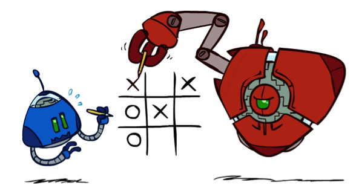
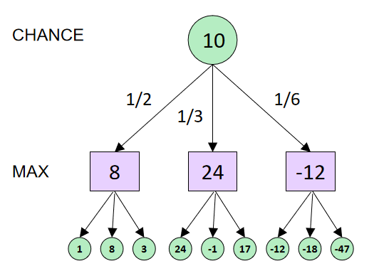
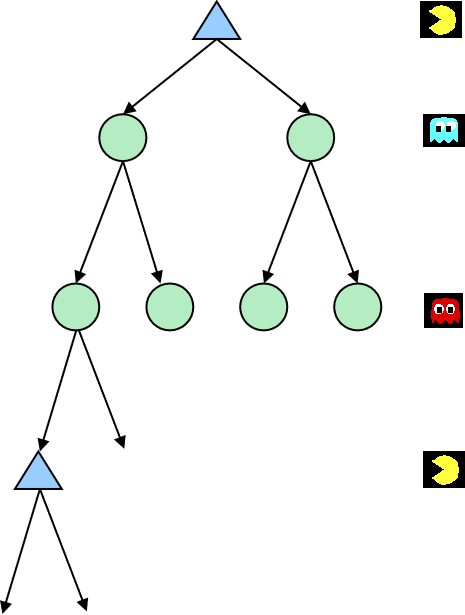

Why wouldn’t we know what the result of an action will be?

Explicit randomness: rolling dice
Unpredictable opponents: the ghosts respond randomly
Actions can fail: when moving a robot, wheels might slip
Idea: Uncertain outcomes controlled by chance, not an adversary!
In the actual operation process, the opponent is not always able to make the best decision, and there will be some probability of mistakes. Therefore we should calculate the average score.
Expectimax Search
The opponent may not be smart enough to get the optimal solution. Therefore, we regard the opponent node as a chance node, which has a certain probability to implement a certain strategy. At this time, the strategy is to maximize the expected utility.
So values should now reflect average-case (expectimax) outcomes, not worst-case (minimax) outcomes.
Max nodes as in minimax search
Chance nodes are like min nodes but the outcome is uncertain
Calculate their expected utilities
I.e. take weighted average (expectation) of children
The search tree of stochastic games has an additional node type: the chance nodes. A chance node u represents a probability distribution over the set of moves available to the player whose node is the parent of u. Instead of the minimax values, the nodes have the expectimax values. They’re the same as the minimax values for MIN and MAX nodes, but for a chance node, the expectimax value is the expected value of its children.
def value(state):
if the state is a terminal state: return the state's utility
if the next agent is MAX: return max-value(state)
if the next agent is EXP: return exp-value(state)

def max-value(state):
initialize v=-∞
for each successor of state:
v = max(v, value(successor))
return v
def exp-value(state):
initialize v=0
for each successor of state:
p = probability(successor)
v += p * value(successor)
return v
Expectimax can not apply pruning.

In expectimax search, we have a probabilistic model of how the opponent (or environment) will behave in any state
Model could be a simple uniform distribution (roll a die)
Model could be sophisticated and require a great deal of computation
We have a chance node for any outcome out of our control: opponent or environment
The model might say that adversarial actions are likely!
For now, assume each chance node magically comes along with probabilities that specify the distribution over its outcomes.
One important thing to remember is that just because we assign probabilities that reflect our believes to the outcome , does not mean that the thing on the other side of flipping a coin.
If I think there is a 20% chance that the ghost go to left , it doesn't mean that the ghost has a random number generator. It just means that given my model which may be a simplification that's the best i can say given my evidence.
Video of Demo World Assumptions Random Ghost – Expectimax Pacman
Video of Demo World Assumptions Adversarial Ghost – Expectimax Pacman